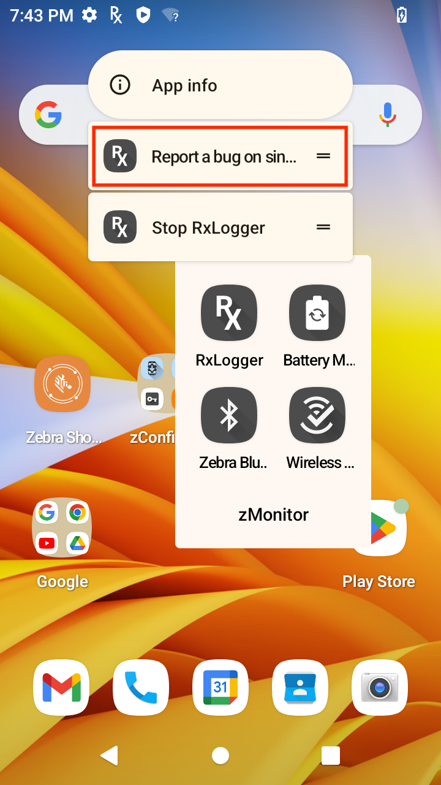
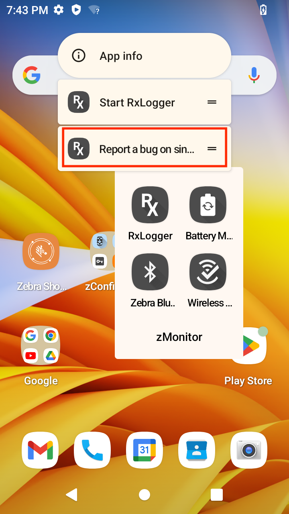

Overview
RxLogger data collection modules control the logging of individual components of an Android system. Modules can be enabled or disabled and their parameters can be modified as needed.
Out of the 12 modules, 7 are enabled by default.
Enabled by default:
Disabled by default:
Tap the "About" button for a list of active RxLogger modules:
Tap the Settings button to edit module settings:

See also:
ANR Module
Controls collection of data from Android's "application not responding" (ANR) events. Event data is copied directly from the Android system and saved in a file called trace.txt or some variant thereof. For example, the ANR event for a post-loaded app would be similar to trace-<app_package_name>.txt.
| Name | Description | Type | Value(s) |
|---|---|---|---|
| Enable Module | Enable or disable collection of ANR files | Boolean | true (default) false |
| Log path | The storage path for ANR files | String | <RxLogger_Path>/anr/ See Logs for the expanded path represented by <RxLogger_Path> |
| Secure Log Path | The storage path for secure ANR files | String | <Secure_RxLogger_Path>/anr/ See Logs for the expanded path represented by <Secure_RxLogger_Path> |
BTSnooplog Module
The BTSnooplog Module captures Bluetooth HCI (Host Controller Interface) snoop logs from the device, containing all Bluetooth transmissions made on the connected Bluetooth peripheral. Logs are stored in the folder <RxLogger_Path>/btsnooplog/. Bluetooth HCI snoop log is saved as hci_snoop<YYYYMMDDhhmmss>.cfa. At any time, there can be a maximum of 2 files, with each file reaching up to 64 MB in size. When a newer .CFA log reaches its maximum size, RxLogger overwrites the older .CFA log with the latest HCI details. RxLogger must be stopped before BTSnooplog log files can be collected.
Notes:
- BTSnooplog is not supported on TC15 and TN28 devices.
- When a Bluetooth peripheral is paired and BTSnooplog module is enabled, expect Bluetooth to disconnect and re-connect to the peripheral as required for BTSnooplog to start capturing snoop logs. This also occurs when any changes are made to BTSnooplog configuration.
| Name | Description | Type | Value(s) |
|---|---|---|---|
| Enable Module | Enable or disable BTSnooplog module log collection | Boolean | true false (default) |
| Log path | The storage path for BTSnooplog files | String | <RxLogger_Path>/btsnooplog/ See Logs for the expanded path represented by <RxLogger_Path> |
| Secure Log Path | The storage path for secure BTSnooplog files | String | <Secure_RxLogger_Path>/btsnooplog/ See Logs for the expanded path represented by <Secure_RxLogger_Path> |
| Choose Log Filter | Determines the amount of information logged | List | 0 - NONE 1 - ERROR 2 - WARNING (default) 3 - API 4 - EVENT 5 - FULL 6 - VERBOSE |
Kernel Module
The Kernel module captures kmsg data from the Android system and outputs it to a series of numbered files (i.e. KLog0.txt, KLog1.txt, KLog2.txt) with 0 being the newest.
| Name | Description | Type | Value(s) |
|---|---|---|---|
| Enable Module | Enable or disable collection of kernel logs | Boolean | true (default) false |
| Log path | The storage path for kernel logs | String | <RxLogger_Path>/ See Logs for the expanded path represented by <RxLogger_Path> |
| Secure Log Path | The storage path for secure kernel files | String | <Secure_RxLogger_Path>/ See Logs for the expanded path represented by <Secure_RxLogger_Path> |
| Kernel Log filename | The base file name to save kernel logs | String | KLog (default) |
| Kernel Log File size (MB) | The size of each kernel log file before rotating in megabytes | Integer | 10 (default) |
| Kernel Log Interval (sec) | The rate at which kernel logs will be dumped into the collecting file | Integer | 30 (default) |
| Kernel Log file count | The maximum number of kernel log files to keep at any one time | Integer | 2 (default) |
| Enable System Timestamp in Kernel Log | Enable or disable time stamp in kernel logs | Boolean | true (default) false |
| System Timestamp Interval | The interval to add timestamp in kernel logs | Integer | 60 (default) |
| Enable Logcat Integration Override | Enable or disable logcat integration | Boolean | true false (default) |
Logcat Module
Captures data from Android's internal logging mechanism, sometimes known as logcat buffers. The Logcat module captures any or all of the logcat buffers:
- System
- Event
- Radio
- Main
- Crash
Module options allow data from any or all enabled buffers to be stored in separate files or in a single combined file. Output is stored in a series of numbered text files (i.e. Main0.txt, Main1.txt, Main2.txt) with 0 being the newest.
Reference material: Android logging and filtering
| Name | Description | Type | Value(s) |
|---|---|---|---|
| Enable Module | Enable or disable collection of logcat logs | Boolean | true (default) false |
| Log path | The storage path for logcat logs | String | <RxLogger_Path>/ See Logs for the expanded path represented by <RxLogger_Path> |
| Secure Log Path | The storage path for secure logcat files | String | <Secure_RxLogger_Path>/ See Logs for the expanded path represented by <Secure_RxLogger_Path> |
| Choose Logcat Buffer Size | Select the logcat buffer size Note: For Android 11, the default is 4MB. |
List | 0 - 256K (default) 1 - 1M 2 - 4M 3 - 8M 4 - 16M |
| Enable main logcat | Enable or disable the collection of the main buffer | Boolean | true (default) false |
| Main log interval (sec) | The rate at which main buffer logs will be dumped into the collecting file | Integer | 30 (default) |
| Main log filename | The base file name to save main buffer logs | String | Main (default) |
| Main log file count | The maximum number of main buffer log files to keep at any one time | Integer | 2 (default) |
| Main log file size (MB) | The size of each main buffer log file before rotating in megabytes | Integer | 5 (default) |
| Main log filter | Custom logcat filter to run on the main buffer | String | [Enter string] |
| Enable event logcat | Enable or disable the collection of the event buffer | Boolean | true (default) false |
| Event log interval (sec) | The rate at which event buffer logs will be dumped into the collecting file | Integer | 30 (default) |
| Event log filename | The base file name to save event buffer logs | String | Event (default) |
| Event log file count | The maximum number of event buffer log files to keep at any one time | Integer | 2 (default) |
| Event log file size (MB) | The size of each event buffer log file before rotating in megabytes | Integer | 5 (default) |
| Event log filter | Custom logcat filter to run on the event buffer | String | [Enter string] |
| Enable radio logcat | Enable or disable the collection of the radio buffer | Boolean | true (default) false |
| Radio log interval (sec) | The rate at which radio buffer logs will be dumped into the collecting file | Integer | 30 (default) |
| Radio log filename | The base file name to save radio buffer logs with | String | Radio (default) |
| Radio log file count | The maximum number of radio buffer log files to keep at any one time | Integer | 2 (default) |
| Radio log file size (MB) | The size of each radio buffer log file before rotating in megabytes | Integer | 5 (default) |
| Radio log filter | Custom logcat filter to run on the radio buffer | String | [Enter string] |
| Enable system logcat | Enable or disable the collection of the system buffer | Boolean | true (default) false |
| System log interval (sec) | The rate at which system buffer logs will be dumped into the collecting file | Integer | 30 (default) |
| System log filename | The base file name to save system buffer logs | String | System (default) |
| System log file count | The maximum number of system buffer log files to keep at any one time | Integer | 2 (default) |
| System log file size (MB) | The size of each system buffer log file before rotating in megabytes | Integer | 5 (default) |
| System log filter | Custom logcat filter to run on the system buffer | String | [Enter string] |
| Enable crash logcat | Enable or disable the collection of the crash buffer | Boolean | true (default) false |
| Crash log interval (sec) | The rate at which crash buffer logs will be dumped into the collecting file | Integer | 30 (default) |
| Crash log filename | The base file name to save crash buffer logs | String | Crash (default) |
| Crash log file count | The maximum number of crash buffer log files to keep at any one time | Integer | 2 (default) |
| Crash log file size (MB) | The size of each crash buffer log file before rotating in megabytes | Integer | 5 (default) |
| Crash log filter | Custom logcat filter to run on the crash buffer | String | [Enter string] |
| Enable combined logcat | The maximum number of crash buffer log files to keep at any one time | Integer | 2 (default) |
| Enable main buffer | Enable or disable the addition of the main buffer into the combined locat file | Boolean | true false (default) |
| Enable event buffer | Enable or disable the addition of the event buffer into the combined locat file | Boolean | true false (default) |
| Enable radio buffer | Enable or disable the addition of the radio buffer into the combined locat file | Boolean | true false (default) |
| Enable system buffer | Enable or disable the addition of the system buffer into the combined locat file | Boolean | true false (default) |
| Enable crash buffer | Enable or disable the addition of the crash buffer into the combined locat file | Boolean | true false (default) |
| Combined log interval (sec) | The rate at which combined buffer logs will be dumped into the collecting file | Integer | 30 (default) |
| Combined log filename | The base file name to save combined buffer logs | String | Combined (default) |
| Combined log file count | The maximum number of crash buffer log files to keep at any one time | Integer | 2 (default) |
| Combined log file size (MB) | The size of each combined buffer log file before rotating in megabytes | Integer | 10 (default) |
| Combined log filter | Custom logcat filter to run on the combined buffer | String | [Enter string] |
LTS Module
The Long Term Storage (LTS) module gathers log files generated by other active modules and stores them together for device health and behavior analysis over a period of time. Module output files are compressed with gzip and stored in the specified path, which is appended as shown below. Multiple stores in a single hour (noted in military time) are numbered from 00-99.
Storage Path:
/<device_model>/<BSP_build_number>/<device_serial_number>/<YYMMDD>/<HHxx>/
Example:
TC51/91-01-21-NN-00/16885225D0029/170621/2100/
| Name | Description | Type | Value(s) |
|---|---|---|---|
| Enable Module | Enable or disable LTS collection | Boolean | true false (default) |
| Log path | The storage path for LTS files | String | <RxLogger_Path>/RxLoggerLTS/ See Logs for the expanded path represented by <RxLogger_Path> |
| Secure Log Path | The storage path for secure LTS files | String | <Secure_RxLogger_Path>/RxLoggerLTS/ See Logs for the expanded path represented by <Secure_RxLogger_Path> |
Qxdm Module
The Qxdm Module captures Qualcomm Modem Logs from the device, which are read using a Qualcomm utility. This module also accepts a user-defined or custom configuration file Custom_filter.cfg generated by Qualcomm tools and stored in the <RxLogger_Path>/qxdm/cfg folder.
For SD660 devices, Qxdm Module appears only for WAN devices. For newer chipsets such as SD6490 and SD6375, it appears on both WAN and WLAN devices due to the added battery filter.
Output from this module consumes all available storage space if "Custom Log" is not enabled with "Maximum log file number" specified. Zebra recommends specifying a log size and maximum quantity in accordance with available storage.
| Name | Description | Type | Value(s) |
|---|---|---|---|
| Enable Module | Enable or disable Qxdm collection | Boolean | true false (default) |
| Log path | The storage path for Qxdm files | String | <RxLogger_Path>/qxdm/logs/ See Logs for the expanded path represented by <RxLogger_Path> |
| Secure Log Path | The storage path for secure Qxdm files | String | <Secure_RxLogger_Path>/qxdm/logs/ See Logs for the expanded path represented by <Secure_RxLogger_Path> |
| Qxdm Log Size (MB) | Specify the size of each individual Qxdm log file | Integer | 100 (default) |
| Qxdm test sets to keep | Number of test sets to keep (one test set is a start and stop) | Integer | 3 (default) |
| Choose Log Filter | Select the log filter that Qxdm needs to process Note: • The Default-Lite filter is not available on SD660-platform devices, see Zebra Platform Devices. |
List | 0 - Default-Lite (default) 2 - Default 3 - Battery 4 - Audio 5 - User Defined (from <RxLogger_Path>/qxdm/cfg/Custom_filter.cfg) |
| Path for User Defined Filter | The file name if using a user-defined config file <RxLogger_Path>/qxdm/cfg/Custom_filter.cfg | String | Custom_filter.cfg (default) |
| Choose Logging Limit Type | Select custom log option to specify the maximum number of log files to be generated | List | 0 - Default logging (default) 1 - Custom Log (Specify Max log file number) |
| Maximum Log File Number | Applies to Custom Log, specifies the number of log files to keep on a test set which must be specified by user | Integer | 3 (default) |
Ramoops Module
Captures the last kmsg from the device, writing it to persistent memory immediately prior to a system crash. Ramoops outputs text files generated by the system at boot or after a kernel panic. These files contain raw kmsg data from the boot immediately prior to the crash. More about Ramoops.
| Name | Description | Type | Value(s) |
|---|---|---|---|
| Enable Module | Enable or disable Ramoops collection | Boolean | true (default) false |
| Log path | The storage path for Ramoops files | String | <RxLogger_Path>/ramoops/ See Logs for the expanded path represented by <RxLogger_Path> |
| Secure Log Path | The storage path for secure Ramoops files | String | <Secure_RxLogger_Path>/ramoops/ See Logs for the expanded path represented by <Secure_RxLogger_Path> |
| Base filename | The base file name of stored ramoops file | String | ramoops (default) |
| Ramoops file count | The maximum number of ramoops log files to keep at any one time | Integer | 2 (default) |
Recovery Module
The Recovery Module captures recovery/OSupdate logs as well as Android's Rescue Party logs from the device. Rescue Party is supported in RxLogger starting with Android 9.0, preventing devices from being stuck in reboot loops. If a bootloop is detected, Android sends out a "rescue party" to perform a series of actions in attempts to recover the device. As a last resort, Rescue Party reboots the device into recovery mode and prompts the user to perform a factory reset. Recovery logs are stored in folder <RxLogger_Path>/recovery, e.g. sdcard/RxLogger/recovery.
| Name | Description | Type | Value(s) |
|---|---|---|---|
| Enable Module | Enable or disable Recovery module log collection | Boolean | true false (default) |
Resource Module
The Resource Module captures device information and system statistics at specified intervals to determine the health and behavior of device resources over a period of time. It outputs collected metrics as a series of comma separated values stored in .CSV files.
Devices across different chipsets typically display the same data, with the exception of Battery Power, in which the data displayed varies by device chipset.
| Name | Description | Type | Value(s) |
|---|---|---|---|
| Enable Module | Enable or disable Resource collection | Boolean | true (default) false |
| Log path | The storage path for Resource files | String | <RxLogger_Path>/ See Logs for the expanded path represented by <RxLogger_Path> |
| Secure Log Path | The storage path for secure Resource files | String | <Secure_RxLogger_Path>/ See Logs for the expanded path represented by <Secure_RxLogger_Path> |
| Resource log Interval (sec) | The rate at which Resource collects and logs information | Integer | 60 (default) |
| Resource Log file size (MB) | The size of each Resource Log file before rotating in megabytes | Integer | 10 (default) |
| Resource Log file count | The maximum number of Resource files to keep at any one time | Integer | 2 (default) |
| Power | Enable or disable the collection of battery statistics, see Battery Power | Boolean | true (default) false |
| System Resource | Enable or disable the collection of System Resource information | Boolean | true (default) false |
| Advanced CPU | Enable or disable the collection of CPU status | Boolean | true false (default) |
| Network | Enable or disable the collection of Network status | Boolean | true false (default) |
| Light | Enable or disable the ambient light level | Boolean | true false (default) |
| Bluetooth | Enable or disable the collection of Bluetooth information | Boolean | true (default) false |
| Heater | Enable or disable the collection of heater information | Boolean | true false (default) |
| Hide Non-Applicable data | Enable or disable the collection of data not applicable based on available device resources. For example, a WLAN only device will not log WAN data. | Boolean | true false (default) |
| Hide Raw Data | Enable or disable the collection of raw data information | Boolean | true false (default) |
Battery Power
The availability of battery power data in the resource .CSV file (shown as columns) is based on the RxLogger version:
| Battery Power | RxLogger 7.0 | RxLogger 7.75 | RxLogger 7.29 |
|---|---|---|---|
| Battery Remaining | Yes | Yes | Yes |
| Battery Current | Yes | Yes | Yes |
| Battery Voltage | Yes | Yes | Yes |
| Battery Temp | Yes | Yes | Yes |
| Battery Status | Yes | Yes | Yes |
| Battery Manufacture Date | Yes | Yes | Yes |
| Battery Serial Number | Yes | Yes | Yes |
| Battery Part Number | Yes 2 | Yes | Yes 2 |
| Battery Backup Voltage (mV) | Yes 2 | N/A | Yes 2 |
| Battery Rated Capacity (mAh) | Yes 2 | Yes | Yes 2 |
| Battery Decommission Status | Yes 2 | Yes 4 | Yes 2 |
| Battery Base Cumulative Charge (mAh) | Yes 2 | Yes 4 | Yes 2 |
| Battery Error Status | Yes 2 | Yes | Yes 2 |
| Battery Present Capacity (mAh) | Yes 3 | Yes 4 | Yes 3 |
| Battery Health Percentage (%) | Yes 3 | Yes 4 | Yes 3 |
| Battery Percent Decommission Threshold (%) | Yes 3 | Yes | Yes 3 |
| Battery Present Charge (mAh) | Yes 3 | Yes 4 | Yes 3 |
| Battery Total Cumulative Charge (mAh) | Yes 3 | Yes 4 | Yes 3 |
| Battery Secs Since First Use (seconds) | Yes 3 | N/A | Yes 3 |
| Battery Time Remaining (minutes) | Yes 3 | Yes | Yes 3 |
| Battery Time to Full (minutes) | Yes 3 | Yes | Yes 3 |
| Battery Cycles | Yes 3 | Yes | Yes 3 |
| Battery Usage Decommission Threshold | Yes 2 | Yes | Yes 2 |
| Estimated Time Remaining | Yes 1 | N/A | Yes 1 |
| Estimated Time To Full | Yes 1 | N/A | Yes 1 |
| Ti Temp | Yes | Yes | Yes |
| Ti SOC | Yes | Yes | Yes |
| Ti Volt | Yes | Yes | Yes |
| Ti Current | Yes | Yes | Yes |
| Qti Temp | Yes | Yes | Yes |
| Qti Temp Raw | Yes 1 | N/A | Yes 1 |
| Qti SOC | Yes | Yes | Yes |
| Qti Volt | Yes 2 | Yes | Yes 2 |
| Qti Current | Yes 2 | Yes | Yes 2 |
| Charger Type | Yes 2 | Yes | Yes 2 |
| Pmux Input | Yes 2 | N/A | Yes 2 |
| Pmux Active | Yes 2 | N/A | Yes 2 |
| Screen State | Yes | Yes | Yes |
| Screen Brightness | Yes | Yes | Yes |
1 Present on all devices except TC53/TC58, TC73/TC78 and WS50 devices
2 Only present on TC53/TC58, TC73/TC78 and WS50 devices
3 Only present on TC53/TC58, TC73/TC78 and WS50 devices with Power Precision+ Batteries
4 Only present on ET40/ET45 devices
Snapshot Module
Captures device information and system statistics at each "moment in time" to determine the health and behavior of device resources over a specified period. Outputs a single text file containing collected metrics for selected parameters for each specified interval. Though similar to the Resource module in function, Snapshot captures more precise data, including threads and dumpsys details along with a device fingerprint header for each file. Snapshot creates one text file per data collection set containing with the output of all enabled data selections.
| Name | Description | Type | Value(s) |
|---|---|---|---|
| Enable Module | Enable or disable Snapshot collection | Boolean | true (default) false |
| Log path | The storage path for Snapshot logs | String | <RxLogger_Path>/snapshots/ See Logs for the expanded path represented by <RxLogger_Path> |
| Secure Log Path | The storage path for secure Snapshot files | String | <Secure_RxLogger_Path>/snapshots/ See Logs for the expanded path represented by <Secure_RxLogger_Path> |
| Log filename | The base file name of stored Snapshot file | String | snapshot (default) |
| Log Interval (sec) | The rate at which Snapshot will collect information and dump into its file | Integer | 1800 (default) |
| Snapshot file count | The maximum number of Snapshot files to keep at any one time | Integer | 50 (default) |
| Top | Enable or disable running the “top†command for data collection | Boolean | true (default) false |
| CPU Info | Enable or disable running the “dumpsys cpuinfo†command for data collection | Boolean | true (default) false |
| Memory Info (Choose one option) |
Enable or disable running the “dumpsys meminfo -a†command to collect memory usage of installed apps. Disabled by default. | Boolean | true false (default) |
| Enable or disable running the “dumpsys meminfo -s†command to collect memory usage of system processes. Enabled by default. Available on all devices except WS50. | Boolean | true (default) false |
|
| Battery Info | Enable or disable running the “dumpsys batterystats†command for data collection | Boolean | true (default) false |
| Wake Locks | Enable or disable the collection of the sys/fs wake_lock information | Boolean | true (default) false |
| Time in State | Enable or disable the collection of the sys/fs cpufreq for each core | Boolean | true (default) false |
| Processes | Enable or disable running the “ps -p†command for data collection | Boolean | true (default) false |
| Threads | Enable or disable running the “ps -t -p -P†command for data collection | Boolean | true (default) false |
| Properties | Enable or disable running the “getprop†command for data collection | Boolean | true (default) false |
| Interfaces | Enable or disable running the “netcfg†command for data collection | Boolean | true (default) false |
| IP Routing Table | Enable or disable the collection of the net route for data collection | Boolean | true (default) false |
| Connectivity | Enable or disable running the “dumpsys connectivity†command for data collection | Boolean | true (default) false |
| Wifi | Enable or disable running the “dumpsys wifi†command for data collection | Boolean | true (default) false |
| File systems | Enable or disable running the “df†command for data collection | Boolean | true (default) false |
| Usage Stats | Enable or disable running the “dumpsys usagestats†command for data collection | Boolean | true false (default) |
| ISub | Captures information regarding SIM cards and the mobile network subscription | Boolean | true false (default) |
| Telephony Debug Service | System service responsible for capturing debug information related to telephony services and cellular network connectivity. This is only visible in Secure Mode. | Boolean | true false (default) |
| Telephony Registry | Captures state of telephony-related components and services | Boolean | true false (default) |
| Telecom | Collects telephony-related functionality, such as making and receiving calls, handling SIM cards, and managing call logs | Boolean | true false (default) |
| Isms | Captures information about the SMS (Short Message Service) functionality through the Isms interface | Boolean | true false (default) |
| Location | Captures detailed information about the device's location providers, location requests, and other location-related details | Boolean | true false (default) |
| Phone | Captures information about the phone state, call-related details, signal strength, network information and other phone-related details | Boolean | true false (default) |
| Carrier Config | Captures detailed information about the configuration settings that are applied by the device for a specific carrier | Boolean | true false (default) |
Tcpdump Module
Captures packet data for all device network connections and outputs a binary file that can be read with Wireshark and other standards-based network analysis tools.
| Name | Description | Type | Value(s) |
|---|---|---|---|
| Enable Module | Enable or disable tcpdump collection | Boolean | true false (default) |
| Log path | The storage path for tcpdump logs | String | <RxLogger_Path>/tcpdump/ See Logs for the expanded path represented by <RxLogger_Path> |
| Secure Log Path | The storage path for secure tcpdump files | String | <Secure_RxLogger_Path>/tcpdump/ See Logs for the expanded path represented by <Secure_RxLogger_Path> |
| Base filename | The base file name of stored tcpdump file | String | capture.pcap (default) |
| Tcpdump file size (MB) | The max file size used before rotating tcpdump files | Integer | 5 (default) |
| Tcpdump file count | The max number of tcpdump files to keep | Integer | 2 (default) |
Tombstone Module
Collects the Android native crash logs from the device, which contain stack traces and other details about the crashed process. Tombstone files are output in sequence starting with tombstone_00through tombstone_09 and starting again with tombstone_00. Beginning with Android 11, up to 32 Tombstone log files are output (reaching tombstone_31), after which the logs start again with tombstone_00. Use timestamps to determine the most recent files.
See Crash dumps and tombstones for more information on Android native crash logs.
| Name | Description | Type | Value(s) |
|---|---|---|---|
| Enable Module | Enable or disable tombstone collection | Boolean | true (default) false |
| Log path | The storage path for tombstone logs | String | <RxLogger_Path>/tombstone/ See Logs for the expanded path represented by <RxLogger_Path> |
| Secure Log Path | The storage path for secure tombstone files | String | <Secure_RxLogger_Path>/tombstone/ See Logs for the expanded path represented by <Secure_RxLogger_Path> |
Instant Logging Module
Instant Logging simplifies the process of capturing logs by offering the ability to capture specific logs on-demand when needed. This feature is particularly beneficial for diagnosing issues on the device. Simply select the type of log to capture (such as battery, Bluetooth, scanner, audio, cellular, or WiFi), set the logging duration, and start the capture. The logging process automatically terminates once the designated time period elapses. The logs can then be accessed and retrieved from the device.
Logs captured with Instant Logging can be identified by the presence of the text "Single-Touch" at the beginning of the log content, signifying the log type. If Instant Logging is not used, this identifier is replaced with the term "Legacy."
| Name | Description | Type | Value(s) |
|---|---|---|---|
| Enable Module | Enable or disable Instant Logging | Boolean | false (default) true |
| Select Module | Choose zero, one or two log options to capture in addition to the default RxLogger logs. If no selection is made, only the default logs are captured: ANR, Kernel, Logcat, Ramoops, Resource, Snapshot, Tombstone |
List | An integer that represents either an individual option or a combination of options, as specified in the *Select Module table below: • Battery (captures QXDM logs with battery filter applied) • Bluetooth (captures BTSnooplog logs) • Scanner (captures defaultLogcat logs) • Audio (captures QXDM logs with audio filter applied) • Cellular (captures QXDM logs with default-lite filter applied) • WiFi (captures Kernel logs with logcat integration for single file output) |
| Log Duration (sec) | Define the time interval for log capture. Note: Integers are designated for use in the configuration file (config.json). |
List | 0 - None (continuously logs) 1 - 30 min 2 - 1 hour 3 - 2 hours 4 - 3 hours 5 - 4 hours |
* Select Module: In the configuration file config.json, Select Module is represented by an integer that reflects either a single option or the combination of the 6 available options:
| Integer | Option(s) |
|---|---|
| 1 | audio |
| 2 | audio & battery |
| 3 | audio & Bluetooth |
| 4 | audio & cellular |
| 5 | audio & scanner |
| 6 | audio & WiFi |
| 7 | battery |
| 8 | battery & Bluetooth |
| 9 | battery & cellular |
| 10 | battery & scnner |
| 11 | battery & WiFi |
| 12 | Bluetooth |
| 13 | Bluetooth & cellular |
| 14 | Bluetooth & scanner |
| 15 | Bluetooth & WiFi |
| 16 | cellular |
| 17 | cellular & scanner |
| 18 | cellular & WiFi |
| 19 | scanner |
| 20 | scanner & WiFi |
| 21 | WiFi |
| 22 | none (default) |
Launch Instant Logging
Select one of the following methods to launch Instant Logging, which opens the Report an Issue screen:
- Power Menu - Launch the power menu (press and release the power button), then tap on RxLogger.
- Notification Drawer - Swipe down the notification drawer on the device, then tap RxLogger.
Instant Logging shortcut; RxLogger started. Instant Logging shortcut; RxLogger stopped. - App Shortcut - Tap and hold the RxLogger icon, then tap Report a bug... from the menu that appears.
  Instant Logging shortcut; RxLogger started. Instant Logging shortcut; RxLogger stopped.
Log Capture
To quickly capture logs with Instant Logging:
- In the main RxLogger screen, activate the Report a bug on single touch option. The Settings tile changes to a different graphic.
| RxLogger main screen. | Enable single touch. |
Select zero, one or two of the following log types to capture in addition to the default RxLogger logs. If no selection is made, only the default logs are captured. See Instant Logging for more information.
Optionally, enable Log duration. Adjust the slider to specify the duration for capturing the logs:
- 30 minutes
- 1 hour
- 2 hours
- 3 hours
- 4 hours
If Log Duration is enabled, it generates single, separate log files for each of the following logs: Main, System, Event, Crash, Radio, and Kernel. Each Instant Logging session creates new files. Logging automatically stops once the log duration is reached.
If Log Duration is disabled, logs are continously captured on a rotating basis based on the Kernel Module and Logcat Module file options (file count and file size). For Logcat, file options are individually specified for each logcat buffer: Main, System, Event, Crash, and Radio.
Tap Start Logging. A countdown timer at the bottom of the screen shows the remaining time. Logging automtically stops when the timer reaches zero.
Backup
Create a backup of the RxLogger folder on-demand as a .zip file containing all the RxLogger logs. This is particularly useful to save logs on a device at a specific point in time after an issue occurs. Backup logs are saved on the device as a .zip file stored in /sdcard/rxlogger/Backup-<date>-<HHMMSS>.zip, with the date and timestamp as part of the file name. Backups are triggered by any of the following methods:
- RxLogger - from the main screen, tap on the top right menu and select BackupNow.
- RxLogger Utility - tap on the round save icon, or chat head (cannot be deleted with a long press).
- Android intent - use the BackupNow broadcast intent:
com.symbol.rxlogger.intent.action.BACKUP_NOW.

|
Backup via RxLogger main screen (left) or RxUtility (right)
Secure Backup
When Secure Mode is enabled, backups create password-protected .zip files of RxLogger logs. These logs could aid in diagnosing issues. The .zip files are named with the date and time of the backup, and stored in /<Secure_RxLogger_Path>/SecureBackup-<date>-<HHMMSS>.zip.
<Secure_RxLogger_Path> represents one of the following:
- Internal storage path: /sdcard/Android/data/com.symbol.rxlogger/RxLogger/secure/log_data/
- External storage path: /storage/<UUID>/Android/data/com.symbol.rxlogger/RxLogger/secure/log_data/
A backup in Secure Mode is initiated through any of the following methods:
- RxLogger - Select BackupNow from the top right menu on the main screen and provide a password.
- RxLogger Utility - Tap the round save icon or chat head (not removable by long press), and input a password.
- Android shell - Use the BackupNow broadcast intent with password, see BackupNow.
- Third party app - Use the BackupNow broadcast intent with token and password, see Secure Mode in BackupNow.
Passwords must be at least 8 characters long and include an uppercase letter, a lowercase letter, a digit and a special character such as @#$%^&*+-=!.
|
|
Backup via RxLogger main screen (left) or RxUtility (right)
When attempting to open the backup .zip file, the user is prompted to enter the password that was initially set for the file.
Related Links
- RxLogger Settings - How to configure data collection module parameters
- Intent APIs - Used to start and stop RxLogger and back up all data
- RxLogger Utility - View RxLogger logs in realtime